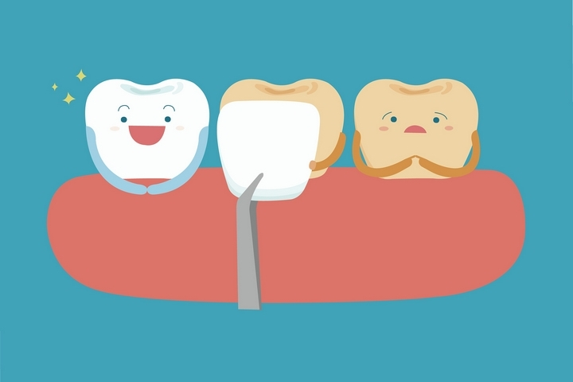
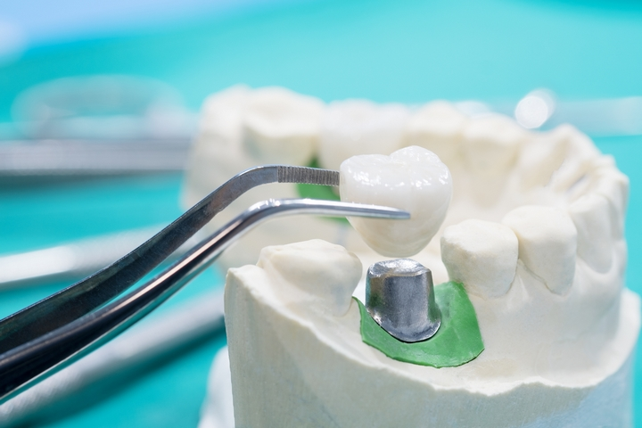
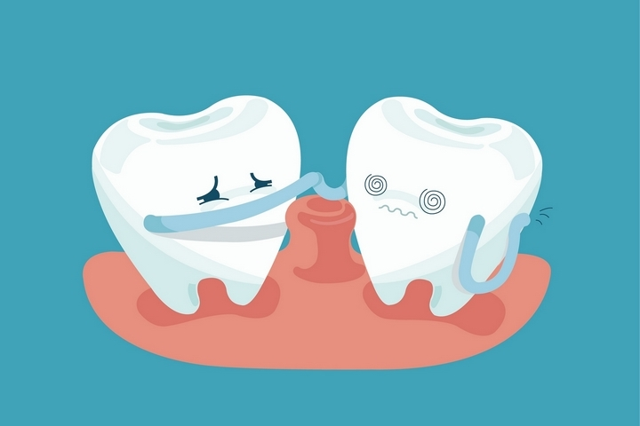

When it comes to getting work done on your teeth, you may wonder just what your options are as far as dental procedures go. Dentists’ offices are typically busy places and it can be hard to find the time to ask questions about what options there are available to you. To give you a rough idea of what procedures you may get at your next visit to the dentist, we’ve detailed a few of the more common options. Continue reading to learn more!
The Most Common Dental Services And Procedures:
1. Orthodontic Treatments
Once thought to be a procedure only for kids, Orthodontic procedures such as braces are becoming increasingly more common amongst both the young and old. These procedures are typically used to make adjustments to crooked teeth, resulting in a much more pleasing smile.
2. Teeth Whitening
One of the more common dental procedures offered at Dentists’ offices is teeth bleaching or whitening. As the name implies, this procedure’s goal is to both whiten, and brighten your teeth by reducing any staining or discolouration that may have occurred.
3. Dental Veneers
Another common procedure you could have done is the application of a dental veneer. These veneers are custom tailored to your teeth and are used to repair conditions such as tooth discolouration, chipped teeth, or even sometimes a misaligned tooth!
4. Dental Crowns
A dental crown or cap is another procedure that is commonly done at a dentist’s office. These caps are custom made out of porcelain or acrylic and are used to reshape a tooth that has been damaged as a result of malformation, decay, or a chip. You may want to browse the Your Smile Dental Care website for additional information.
5. Dental Implants
Dental implants are another common dental procedure and this is normally done in order to replace a lost tooth. Dental implants are typically crafted out of titanium and are placed directly into the jawbone via a surgical procedure. This is not the same as a dental bridge, dental implants are a more permanent solution to the problem.
6. Teeth Shaping
This dental procedure is also commonly called enamel shaping and is when the tooth is reshaped by either removing of filling in missing enamel. This procedure offers immediate benefits and does not typically result in pain.
7. Tooth Bonding
This dental procedure is used to fix the appearance of a chipped, broken, or stained tooth by way of bonding or adhering a material to your tooth.
Conclusion
Who knew a dental office could offer so many different procedures? Now that you know what options are available to you, you will be more likely to get the service you need at your next dental visit! Ask your dentist during your next visit if any of these procedures may be a good idea for you.